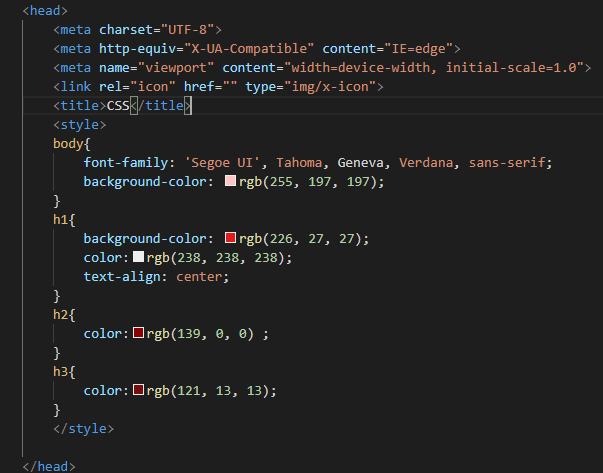

Os código CSS são definidos dentro do cabeçalho, dentro da tag head. Afetam somente o documento em que foi definido.
No Incorporado as estilizações são feitas dentro da tag head. Para cada alteração é necessário informar a tag para alterar o conteúdo dentro dela.
aplicado para poucas páginas.
Há uma vantagem em utilizar o método Incorporado pela facilidade e mais organização no site.
Sintaxe:

body{font-family: 'Segoe UI', Tahoma, Geneva, Verdana, sans-serif;} - existem várias fontes pois caso o sistema ou navegador do usuário que irá acessar o site, a outra fonte funcionará.
background-color: define a cor do funfo do site.
color: define a cor da fonte
text-align: define a forma que se encontrará o texto, centralizado, justificado, etc.